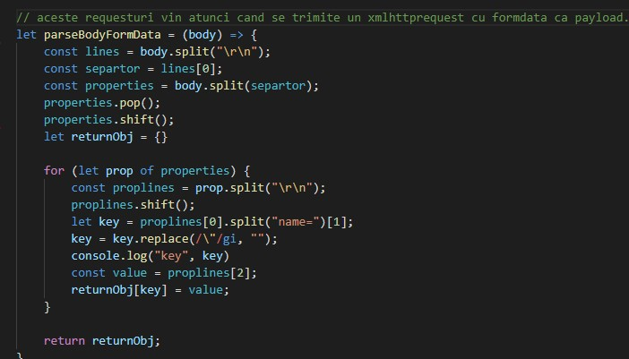

AUTORI
- Mihai-Cosmin C. Ivanov
- Ioana V. Maniga
- Paul-Andrei M. Arhire
Cuprins
Introducere in site
Link prezentare video:
Prezentare videoFront-endul
STOL (Universal Storage Tool) este o aplicatie web care pune la dispozitia utilizatorului un instrument ce permite operatiile uzuale cu (sisteme de) fisiere de mari dimensiuni.
Aplicatia noastra permite stocarea acestor fisiere prin intermediul platformelor Dropbox, One Drive si Google Drive. Astfel, prin logarea pe conturile proprii,
userii pot stoca orice fisier de mari dimensiui, pe care il pot ulterior si descarca din sectiunea "Your files". De asemenea, userul poate selecta si metoda de
distributie a fisierelor intre platforme, din sectiunea "Settings".
Sigla siteului (utilizata in format svg):

Paginile site-ului:
Nota: Toate iconurile utilizate in aplicatie sunt create de noi in aplicatia AdobeXD.
1.Welcome Page
Este reprezentata de pagina de log in/get started,continand:
-Mesaj de intampinare "Welcome to CloudSheets"
-
-Doua butoane:
- -“Log in”, care permite logarea utilizatorului
- -“Get started”, care permite inregistrarea unui nou cont

Butoanele isi schimba aspectul la hover, iar pentru click, butoanele de log in si get started primesc isi schimba culoarea,desemnand sectiunea selectata.
2.Main page
Aceasta reprezinta pagina pe care userul, odata logat, poate sa uploadeze fisiere. Aceasta pagina contine:
-Trei butoane:
- -Your Dropbox: permite logarea cu Dropbox
- -Your Google Drive: permite logarea cu Google Drive
- -Your One Drive: permite logarea cu One Drive
-Butonul de "Choose file"
Acest buton permite rasfoirea prin fisierele locale, aparand alaturi de el numele fisierului ales
-Butonul de "Upload file"
Acest buton apare atunci cand exista deja un file selectat,odata cu numele fisierului

-Tabelul cu numele de fisiere
Acest tabel va contine numele tuturor fisierelor-fragment in care este fragmentat fisierul de dimensiuni mari si locatia acestora(e.g. Google Drive)
3.Your files
Pe aceasta pagina, un user poate gasi toate fisierele pe care le-a uploadat pe site, dimensiunea lor, si, pentru fiecare, un buton de download
Pentru a face display la toate fisierele disponibile, am folosit functiile:
-
Pentru a obtine fisierele:

- Pentru a afisa fisierele:
4.Settings
Pe pagina de setari, un user isi poate schimba numele, parola, sau modul de upload
Pagina contine un formular, care va prelua modificarile cerute si le va trimite prin butoul Save
In momentul salvarii, apare un mesaj de confirmare,in caz de reusita,sau mesaj de eroare in cazul in care setarile nu sunt salvate
Aici sunt verificate si cazurile in care parola noua si confirmarea ei nu corespund,sau parola actuala nu e corecta.
5.Pagina de Admin
Pe pagina de admin se poate intra numai de pe un cont special de admin, unde sunt afisati toti userii aplicatiei.
Adminul poate selecta cati useri doreste din lista, pentru a exporta date despre aceastia in format csv
-Lista userilor:
- Pentru a obtine si afisa userii:
- Prin selectarea unui user, butonul isi schimba culoarea, iar emailul userului este pus in vectorul clientilor selctati: (daca exista macar un user selectat, apare si butonul de export)
-Butonul Export
Acest buton permite downloadarea datelor in format csv
- Pentru a descarca datele am folosit functia:
- Pentru a obtine si descarca datele in format CSV am folosit functia:
Headerul:
Odata ce userul este logat, headerul va contine in partea dreapta numele sau si un buton rotund cu initialele.
Prin apasarea butonului, se va deschide un meniu, care va permite navigarea intre paginile site-ului, sau delogarea
Pentu admin, in acelasi va fi titlul de "Administrator page" impreuna cu un icon ce indica rolul de administrator, folosit tot in format svg
Back-endul
Arhitectura proiectului
Arhitectura proiectului este una clasica asemanatoare cu o arhitectura generala de proiect de Express.js,
dar totul a fost construit de noi, fara a ne folosi de alte biblioteci/frameworkuri.
Diagrama arhitecturala:
Router
Rutarea se face prin parsarea requestului prin mai multe metode, in functie de tipul lui.
Ea suporta orice fel de verbe HTTP, default-ul fiind "GET"
Obiectul router:
Tratarea unui request:
Parsarea body-ului de tip FormData
Templateuri
Templateurile noastre sunt simple, ele permit doar servirea parametrilor de tipuri string, number, fara posibilitatea de a face instructiuni repetitive.
Cod servire templateuri:
Login
Loginul se face cu ajutorul clasicei combinatii de email si parola. Aici au fost facute verificari simple impotriva sqlinjection si cross site scripting
Token
Odata cu logarea se genereaza un token random de lungime (disputabil) mare.
Acesta este adaugat intr-un cache pe server, impreuna cu alte date despre user pentru o viteza mai mare a verificarilor.
Acest lucru a fost inspirat de la aplicatiile de anvergura mare care folosesc asta pentru a rezolva probleme de scalabilitate.
Tokenul este verificat la fiecare ruta si este pus in headere cu ajutorul "Set-Cookie".
El este sters in momentul in care utilizatorul foloseste ruta de logout.
Cacheuri
Siteul dispune de doua tipuri de cacheuri.
Unul este cel presentat mai devreme la sectiunea token, iar al doilea este folosit pentru salvarea refresh-tokenurilor de Onedrive si Google Drive,
respectiv access-tokenului pentru Dropbox (aceasta platforma nu implementeaza conceptul de refresh-token).
Modele
Pentru baza de date am ales sa folosim SQLite3 din cauza modului usor in care este folosit si instalat.
Aceasta se poate schimba relativ usor in multe alte tipuri de BD-uri relationale.
Interactiunile cu tabelele din baza de date au fost separate logic in mai multe modele cu care interactioneaza
direct routerul (joaca rolul unui controller).
OAuth2
Aplicatia este bazata pe OAuth2 si se foloseste de capabilitatile de Upload si Download ale providerilor GoogleDrive, Onedrive si Dropbox.
Aplicatia este usor extensibila sa suporte mai multi provideri atata timp cat se respecta formatul impus initial-scale
Sunt necesare doua implementari una pe backend si una pe frontend.
WebAssembly
Am ales sa folosim WebAssembly pentru o impartire eficienta a fisierelor in chunkuri direct la client.
Aceasta permite viteze mai mari decat folosirea directa a JavaScript.
Splitter-ul de fisiere
El reprezinta un cod simplu de C++ care ia ca input un fisier si scrie in FileSystemul din browser
o sumedenie de 1MB care au ca nume SHA-ul lor si contin un header pentru validare.
Acest header nu este folosit la momentul scrierii acestor randuri, dar isi poate gasi intrebuintare usor.
Fisierele sunt trimise apoi la fiecare cloud provider dupa doua metode: Egal sau Redundant. Aceasat modalitate
se schimba in pagina de setari. Default este egal.
Egal: 1/3 din chunkuri pentru fiecare cloud provider.
Redundant: fiecare cloud provider primeste fiecare chunk.
Codul a fost compilat utilizand emscripten
Etapele de dezvoltare
- 1. Gandirea initiala a arhitecturii, crearea routerului, creatul templateurilor, integrearea minimala a unei baze de date. Crearea primei iteratii de pagini de front
- 2. Integrarea pe client a unei modalitati de impartire a unui fisier in chunckuri. A doua iteratie de frontend.
- 3. Investigarea api-urilor expuse de cloud provideri si implementarea unor Proof Of Concepts
- 4. Integrarea tuturor componentelor create, implemetarea loginului
- 5. Refactorizarea mare a codului, implementarea cacheurilor